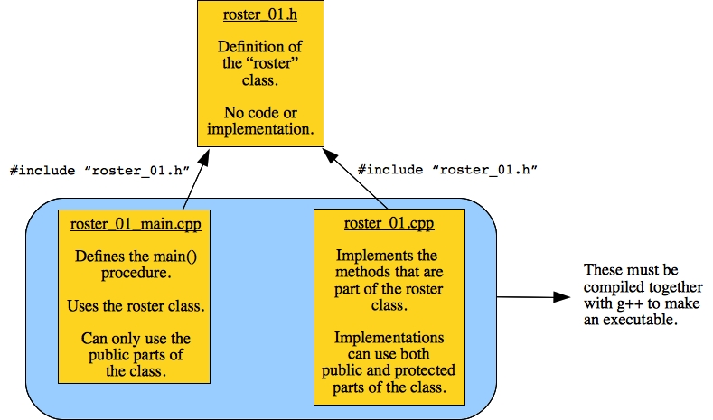
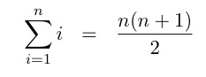

For the program that we write, we will put their names into a file called Roster.txt, and their pictures into the directory Pictures, starting with the file 001001.jpg and ending with 001018.jpg. The first file corresponds to the first name in the roster (Alexander Blinn). The second file corresponds to the second name in the roster (Brody Fairport), etc.
Our goal is to write a program that will create an HTML file that one can use to help memorize the names and faces. The HTML file will have the pictures displayed randomly, and there should be an option to either include the names with the pictures, or not.
We're going to structure this in a standard C++ way. We're going to define a class called a Roster, in a header file roster_01.h:
#include <iostream>
#include <cstdlib>
#include <vector>
#include <string>
using namespace std;
class Roster {
public:
void Add_name(string name);
void Print();
protected:
vector <string> names;
};
|
Classes divide their data and methods into public and protected. If something is public, then anyone may access it. If something is protected, then the data/methods may only be used within the implementation of a class' method. Typically, we make all of the data protected, and only have the methods be public. The reason for this is so that users of a data structure cannot mess up the data -- they only gain access through the methods, which keeps the data safe.
In this example, we have one piece of protected data -- a vector of names, which will contain the roster. There are two methods -- Add_name() adds a name to the roster, and Print() prints the roster.
We're going to do this implementation incrementally, which is how you should always program. It lets you test as you go, and you find bugs much more quickly. Those of you in class typically get to see that first hand, as my programs usually have a few bugs as I write them.
We'll implement the class in roster_01.cpp. This is a very simple implementation: Add_name() simply appends the name to the vector, and Print() simply prints out the names:
#include "roster_01.h"
void Roster::Add_name(string name)
{
names.push_back(name);
}
void Roster::Print()
{
int i;
for (i = 0; i < names.size(); i++) cout << names[i] << endl;
}
|
We'll add a main() routine to complete the program in roster_01_main.cpp. It does a little error checking, then reads the roster file, calling Add_name() with every name. At the end, it calls Print().
#include <fstream>
#include "roster_01.h"
main(int argc, char **argv)
{
Roster r;
ifstream fin;
string name;
if (argc != 2) {
cerr << "usage: roster_main filename\n";
exit(1);
}
fin.open(argv[1]);
if (fin.fail()) { perror(argv[1]); exit(1); }
while (getline(fin, name)) r.Add_name(name);
r.Print();
}
|
First, if you haven't seen an ifstream before, these are how you read from files in C++. You open() the ifstream by associating it with a file (in a C-style string, by the way). Then you can treat fin just like you treat cin to read from the terminal; however, now, you are reading from the file. You can also write files with an ofstream. We'll see that later.
Since we declared r as a local variable, the instance of the Roster class is created as soon as the main() program starts. That class starts with an empty names vector. For that reason, we do not need to do any initialization of the Roster class.
Let's think a little about how we structured this program:
|  |
There are three files. The header in roster_01.h contains definitions only. It must be included by the programs that use it and define it. The #include statement uses double-quotes because the header file is in the current directory.
The main file in roster_01_main.cpp uses the public methods in the Roster class to store names and then print out the Roster.
The implementation file in roster_01.cpp implements the methods. As such, it is allowed to use all parts of the class, both public and protected. It specifies the method being implemented by tagging it with "Roster::." This is how you know that it is implementing a method, and not simply a normal procedure. The implementations are allowed to use all parts of the class as local variables. Thus, when the implementation of Print() uses names, that refers to the vector that is defined in the class.
We can compile the files with one line of g++:
UNIX> g++ -o roster_01 roster_01.cpp roster_01_main.cpp UNIX> roster_01 usage: roster_main filename UNIX> roster_01 Roster.txt Alexander Blinn Brody Fairport Taylor Toxin Kayla Metro William Grantee Sofia Doleful Layla Simplex Henry Betide Ella Grievous Landon Lockheed Hannah Sleep Andrew Domingo Daniel Petrify Eli Jayden Olivine Grace Convoke Gianna Deportation Zachary Obviate Alexandra Spicebush UNIX>Alternatively, we can do what is known as separate compilation, to incrementally compile the program. We do this by first compiling each .cpp program to an object file, which has a .o extension. This is done by passing -c as a flag to the compiler:
UNIX> g++ -c roster_01.cpp UNIX> g++ -c roster_01_main.cpp UNIX>We then link the object files to create an executable that we can run:
UNIX> g++ -o roster_01 roster_01.o roster_01_main.o UNIX>The reason why separate compilation is nice is that compiling from object files is faster than from the source files (the .cpp) ones. Thus, when we compile incrementally, and we change a source file, we recompile the changes source to its object file and then relink all the object files. That is faster than calling g++ on all the source files.
The program make lets you automate this task. If I type "make clean" and then "make roster_01", then make performs the incremental compilation:
UNIX> make clean rm -f *.o roster_?? UNIX> make roster_01 g++ -c roster_01.cpp g++ -c roster_01_main.cpp g++ -o roster_01 roster_01.o roster_01_main.o UNIX>If I type "make roster_01" again, nothing happens, because make looks at the modification times of all the files to determine whether any recompilation needs to occur. Since the object files are newer than the source files, and the executable file is newer than the object files, no recompilation is necessary:
UNIX> make roster_01 make: `roster_01' is up to date. UNIX>However, if I type "touch roster_01.cpp", which updates its modification time, then "make roster_01" will incrementally recompile roster_01.cpp, but not roster_01_main.cpp, and then make the executable:
UNIX> touch roster_01.cpp UNIX> make roster_01 g++ -c roster_01.cpp g++ -o roster_01 roster_01.o roster_01_main.o UNIX>Make reads a makefile to determine what it compiles. Writing makefiles is a bit of an art form. I'll try to have them in the lecture note and lab directories when needed.
void Roster::Print(int columns)
{
int i;
cout << "<table border=2>\n";
for (i = 0; i < names.size(); i++) {
if (i % columns == 0) cout << "<tr>\n"; // Start a new row when i%columns == 0
printf("<td>%s</td>\n", names[i].c_str());
if (i % columns == columns-1) cout << "</tr>\n"; // End the row when i%columns == columns -1
}
if (i%columns != 0) cout << "</tr>\n"; // If the last row is incomplete, end it.
cout << "</table>\n";
}
|
We compile and run it below:
UNIX> make roster_02 g++ -c roster_02.cpp g++ -c roster_02_main.cpp g++ -o roster_02 roster_02.o roster_02_main.o UNIX> roster_02 usage: roster_main filename columns UNIX> roster_02 Roster.txt 6 > roster_02_example.html UNIX>You can look at the resulting HTML file in roster_02_example.html (Click the link to see it as an HTML file):
<table border=2> <tr> <td>Alexander Blinn</td> <td>Brody Fairport</td> <td>Taylor Toxin</td> <td>Kayla Metro</td> <td>William Grantee</td> <td>Sofia Doleful</td> </tr> <tr> <td>Layla Simplex</td> <td>Henry Betide</td> <td>Ella Grievous</td> <td>Landon Lockheed</td> <td>Hannah Sleep</td> <td>Andrew Domingo</td> </tr> <tr> <td>Daniel Petrify</td> <td>Eli Jayden Olivine</td> <td>Grace Convoke</td> <td>Gianna Deportation</td> <td>Zachary Obviate</td> <td>Alexandra Spicebush</td> </tr> </table> |
I'd like to have this number be part of the class. It will be a piece of the class's protected data, and I'll set it when I create an instance of the class. To do that, I need to define a constructor method for the class, which takes the starting number as a parameter. Here is the new class defintion, in roster_03.h
#include <iostream>
#include <cstdlib>
#include <vector>
#include <string>
using namespace std;
class Roster {
public:
Roster(int starting_number); // The constructor, which takes an integer as a parameter.
void Add_name(string name);
void Print(int columns);
protected:
vector <string> names;
int start;
};
|
In roster_03.cpp, we define the constructor, which simply sets the new start variable to the constructor's parameter, and then constructs the filename in the Print() procedure:
#include "roster_03.h"
Roster::Roster(int starting_number)
{
start = starting_number;
}
void Roster::Add_name(string name)
{
names.push_back(name);
}
void Roster::Print(int columns)
{
int i;
cout << "<table border=2>\n";
for (i = 0; i < names.size(); i++) {
if (i % columns == 0) cout << "<tr>\n"; // Start a new row when i%columns == 0
printf("<td>");
printf("Filename: Pictures/%06d.jpg, %s", i+start, names[i].c_str());
printf("</td>\n");
if (i % columns == columns-1) cout << "</tr>\n"; // End the row when i%columns == columns -1
}
if (i%columns != 0) cout << "</tr>\n"; // If the last row is incomplete, end it.
cout << "</table>\n";
}
|
Remember that printf() statement -- it pads the number to six digits, and includes leading zeros.
Finally, we have an issue with our main() routine. Previously, we had declared r is a parameter, which was fine since it did not take an explicit constructor. If we try that now, we'll get a compilation error. To fix it, we change r to be a pointer, and call new with the starting number as a parameter, which is passed to the constructor.
This delays creating the instance of the roster class until the new statement has been reached. It also means that r is a pointer, which points to the new instance. To access the members of the class, you have to use "->" instead of ".". If you copy r, it only copies the pointer and not the instance. This allows you to have multiple data structures that point to one data structure, which is sometimes exactly what you want. Without pointers, you'd have to make copies.
Here is the code for roster_03_main.cpp:
#include <fstream>
#include <sstream>
#include "roster_03.h"
main(int argc, char **argv)
{
Roster *r;
ifstream fin;
istringstream ss;
string name;
int columns, starting_number;
if (argc != 4) {
cerr << "usage: roster_main filename starting_number columns\n";
exit(1);
}
ss.clear(); ss.str(argv[2]);
if (!(ss >> starting_number)) {
cerr << "usage: roster_main filename starting_number columns -- bad starting number\n";
exit(1);
}
ss.clear(); ss.str(argv[3]);
if (!(ss >> columns) || columns <= 0) {
cerr << "usage: roster_main filename starting_number columns -- bad columns specification\n";
exit(1);
}
r = new Roster(starting_number);
fin.open(argv[1]);
if (fin.fail()) { perror(argv[1]); exit(1); }
while (getline(fin, name)) r->Add_name(name);
r->Print(columns);
}
|
UNIX> make roster_03 g++ -c roster_03.cpp g++ -c roster_03_main.cpp g++ -o roster_03 roster_03.o roster_03_main.o UNIX> roster_03 usage: roster_main filename starting_number columns UNIX> roster_03 Roster.txt 1001 6 > roster_03_example.html UNIX>Here's roster_03_example.html.
#include <fstream>
#include <sstream>
#include "roster_03.h"
main(int argc, char **argv)
{
ifstream fin;
istringstream ss;
string name;
int columns, starting_number;
if (argc != 4) {
cerr << "usage: roster_main filename starting_number columns\n";
exit(1);
}
ss.clear(); ss.str(argv[2]);
if (!(ss >> starting_number)) {
cerr << "usage: roster_main filename starting_number columns -- bad starting number\n";
exit(1);
}
ss.clear(); ss.str(argv[3]);
if (!(ss >> columns) || columns <= 0) {
cerr << "usage: roster_main filename starting_number columns -- bad columns specification\n";
exit(1);
}
Roster r(starting_number);
fin.open(argv[1]);
if (fin.fail()) { perror(argv[1]); exit(1); }
while (getline(fin, name)) r.Add_name(name);
r.Print(columns);
}
|
You'll note that I've put the variable declaration after the processing of the command line. That way, r does not get constructed until starting_number has been initialized. It works fine:
UNIX> make roster_ev g++ -c roster_03_evil.cpp g++ -o roster_ev roster_03.o roster_03_evil.o UNIX> roster_ev Roster.txt 1001 6 > roster_ev_example.html UNIX>However, I really don't like that style of programming. Why? Because in my opinion, programs and procedures should have variable declarations and then code. When variables are declared inline, it makes the code that much harder to read and debug. I believe you do much better to declare a pointer with the variable declarations, and then use new. You will not see me ever declare variables in the middle of a procedure. I would prefer that you not do that either.
UNIX> make roster_04 g++ -c roster_04.cpp g++ -c roster_04_main.cpp g++ -o roster_04 roster_04.o roster_04_main.o UNIX> roster_04 usage: roster_main filename starting_number columns print_names(yes/no) UNIX> roster_04 Roster.txt 1001 6 yes > roster_04_names.html UNIX> roster_04 Roster.txt 1001 6 no > roster_04_no_names.htmlTake a look at the two output files:
void Roster::Print(int columns, int print_names)
{
int i;
int rn;
cout << "<table border=2>\n";
for (i = 0; i < names.size(); i++) {
if (i%columns == 0) cout << "<tr>\n";
rn = lrand48()%names.size();
cout << "<td>";
printf("<IMG src=Pictures/%06d.jpg height=100>", rn+start);
if (print_names) cout << "<br>" << names[rn];
cout << "</td>" << endl;
if (i%columns == columns-1) cout << "</tr>\n";
}
if (i%columns != 0) cout << "</tr>\n";
cout << "</table>\n";
}
|
Instead of printing out the names and pictures from 0 to names.size()-1, we use lrand48() to pick a random number between 0 and names.size()-1 and print that out at each iteration. This is a pretty bad technique, because you're very likely to pick the same number twice, which means you get multiple pictures of the same person, and some people won't show up at all. For example:
UNIX> make roster_05_bad_1 g++ -c roster_05_bad_1.cpp g++ -c roster_05_main.cpp g++ -o roster_05_bad_1 roster_05_bad_1.o roster_05_main.o UNIX> roster_05_bad_1 Roster.txt 1001 6 yes > roster_05_bad_1.html UNIX>When you look at roster_05_bad_1.html, you see a lot of duplicates: Andrew Domingo, William Grantee, Taylor Toxin. There is no Grace Convoke or Daniel Petrify.
In class, someone mentioned that I forgot to seed the random number generator (with srand48()). That was intentional on my part: when you're debugging code that uses random numbers, it's good either to not seed the random number generator, or to seed it with the same value over and over. This is because you'll get the same random numbers, which is helpful if you have to chase down a bug that involves the random numbers.
The code is in roster_05_bad_2.cpp, where the following code initializes random:
void Roster::Print(int columns, int print_names)
{
int i, rn;
vector <int> random, inrandom;
inrandom.resize(names.size(), 0);
for (i = 0; i < names.size(); i++) {
do {
rn = lrand48()%names.size();
} while (inrandom[rn]);
inrandom[rn] = 1;
random.push_back(rn);
}
...
|
First off, how can we be sure that this code works? While reasoning about it and convincing yourself it works is one way, another more compelling way is to test it. To do that, I've written rb1.cpp, which randomizes the numbers from 0 to 99 with the above code:
#include <iostream>
#include <cstdlib>
#include <cstdio>
#include <vector>
#include <string>
using namespace std;
main()
{
int i, rn;
vector <int> inrandom;
inrandom.resize(100, 0);
for (i = 0; i < 100; i++) {
do {
rn = lrand48()%100;
} while (inrandom[rn]);
inrandom[rn] = 1;
printf("%3d\n", rn);
}
}
|
I first run it and look at the output -- looks random. To prove that all numbers are there, though, I'll run the following Unix command:
UNIX> rb1 | sort -u | wc
100 100 400
UNIX>
The sort command sorts the lines of standard input, and when you pass it the "-u"
flag, it removes duplicate lines. Thus, if you have no duplicates, it will emit 100
lines. If you have duplicates, it will emit fewer. The wc command prints the
number of lines, words and characters on standard input. It confirms that sort -u
emitted 100 lines, and our code is working.
To demonstrate it catching a bug, rb1-buggy.cpp is identical to rb1.cpp, except I deleted the "inrandom[rn] = 1;" line. Running the above Unix command illustrates that it only produces 66 unique lines -- it has printed lots of duplicates!
UNIX> rb1-buggy | sort -u | wc
66 66 264
UNIX>
While I don't test you on these things, it's good for you to learn some of the Unix
commands, like grep, sed, sort, diff and wc. They
are powerful tools to help you debug your programs!
Now, why is roster_05_bad_2.cpp a bad program? Think about how many times you run through that do-while loop. When i is zero, you will run it once. When i is one, you have a 1 in names.size() chance of picking the number you picked last time. When i is names.size()-1, you only have 1 in names.size() chance of not picking the number you have previously picked. On average, at iteration i, you're going to run the do-while loop i times. If n is equal to names.size(), our average total number of times iterating through the do-while loop is:
|  |
That's expensive -- think about it. If n is 1000, that is 500,500 times. Of course, in our program names.size() is 22, so the program runs quickly. However, part of my job is to teach you good algorithm design, and this program is bad because of how many times you will run through that do-while loop.
For example, suppose we want to randomize the numbers 0, 1, 2, 3, 4 with this algorithm. The following table shows how it works:
| i | random before swapping | lrand48()%(i+1) | random after swapping |
| 4 | { 0, 1, 2, 3, 4 } | 2 | { 0, 1, 4, 3, 2 } |
| 3 | { 0, 1, 4, 3, 2 } | 1 | { 0, 3, 4, 1, 2 } |
| 2 | { 0, 3, 4, 1, 2 } | 2 | { 0, 3, 4, 1, 2 } |
| 1 | { 0, 3, 4, 1, 2 } | 0 | { 3, 0, 4, 1, 2 } |
| 0 | { 3, 0, 4, 1, 2 } | 0 | { 3, 0, 4, 1, 2 } |
You're only calling lrand48() once per iteration, for a total of names.size() times. That's much better than roster_05_bad_2.cpp. Here's the code in roster_05_good.cpp:
void Roster::Print(int columns, int print_names)
{
int i, rn, tmp;
vector <int> random;
for (i = 0; i < names.size(); i++) random.push_back(i);
for (i = random.size()-1; i >= 0; i--) {
rn = lrand48()%(i+1);
tmp = random[i];
random[i] = random[rn];
random[rn] = tmp;
}
...
|
It runs as we'd like. Finally, roster_06.h, roster_06.cpp and roster_06_main.cpp are copies of the previous program with one modification -- srand48(time(0)) is called in roster_06_main.cpp so that we get different HTML files whenever we run it:
UNIX> make roster_06 g++ -c roster_06.cpp g++ -c roster_06_main.cpp g++ -o roster_06 roster_06.o roster_06_main.o UNIX> roster_06 Roster.txt 1001 6 yes > roster_06.html UNIX> sleep 1 UNIX> roster_06 Roster.txt 1001 6 yes > roster_06_2.html UNIX>roster_06.html and roster_06_2.html are indeed different.
{kind=link}
{kind=link}